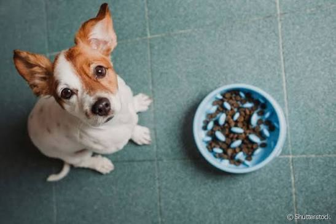
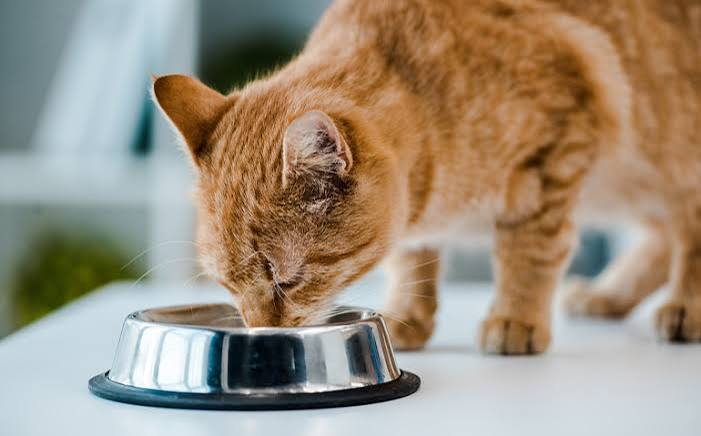

Rações
Rações secas, não perecíveis: duram meses fechadas e não precisam de geladeira.
Nesta página: Ração para cães adultos | Ração para gatos castrados
Ração seca para cães adultos 15 kg
Mais vendido

Ração completa para cães adultos de porte médio e grande, sabor carne e cereais. Ajuda a manter os dentes limpos e o pelo brilhante.
- Peso: 15 kg
- Idade: cães adultos (a partir de 1 ano)
- Validade: 12 meses fechada
Preço: R$ 99,90
ou 3x de R$ 33,30 sem juros
Pedir pelo e-mail
Ração seca para gatos castrados 10 kg

Ração para gatos castrados, com menos calorias para ajudar a controlar o peso. Sabor frango.
- Peso: 10 kg
- Idade: gatos adultos castrados
- Validade: 12 meses fechada
Preço: R$ 70,90
ou 3x de R$ 23,64 sem juros
Pedir pelo e-mail
Dica: guarde a ração em local fresco e seco, com a embalagem bem fechada.